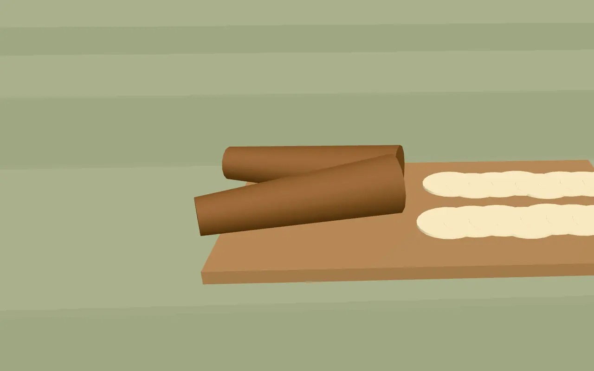
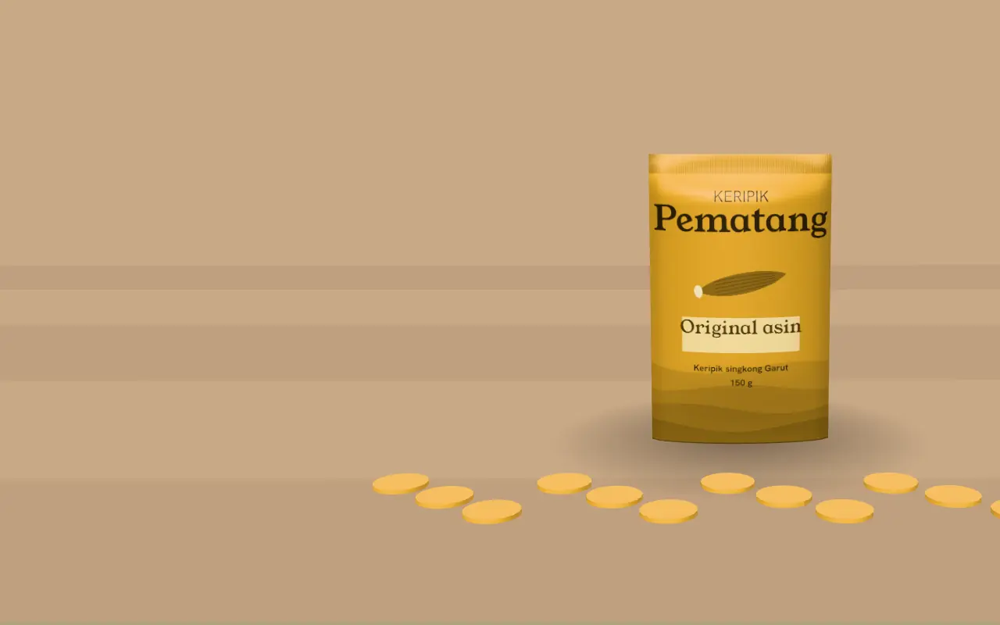

Keripik Pematang, singkong Garut 150 g
Proyek konsep · brand fiktif
Contoh halaman toko dengan kemasan 3D. Putar kemasannya dengan jari atau kursor, lalu pilih rasa.
Original asin
Rasa 1 dari 3
Singkong diiris tipis, digoreng, diberi garam laut. Renyah dan gurih, cocok untuk teman makan siang.
Rp 17.500 per bungkus · harga contoh
Balado
Rasa 2 dari 3
Cabai merah, bawang, dan sedikit gula merah. Pedasnya sedang, manisnya muncul di akhir.
Rp 18.500 per bungkus · harga contoh
Daun jeruk
Rasa 3 dari 3
Wangi daun jeruk dan lada. Tidak pedas, cocok untuk yang tidak kuat cabai.
Rp 19.500 per bungkus · harga contoh

Singkong diiris 1,5 mm
Singkong dikupas, lalu diiris setebal 1,5 mm supaya matang rata dan renyah sampai ke tengah.
Direndam garam, digoreng 8 menit
Irisan direndam air garam 30 menit, ditiriskan, lalu digoreng sekitar 8 menit sampai kuning keemasan.
- 30 menitrendam air garam
- 8 menitpenggorengan
- 150 gisi per bungkus
Dibumbui saat masih hangat
Bumbu ditabur selagi keripik hangat agar menempel. Setelah dingin, keripik dimasukkan ke kemasan dan ditutup rapat.

Pilih jumlah, kirim lewat WhatsApp
1 bungkus Original asin = Rp 17.500
Pesan via WhatsAppTombol ini mengirim pesan contoh ke Bikinin Studio, bukan ke toko sungguhan. Di toko asli, pesan masuk ke WhatsApp penjual.